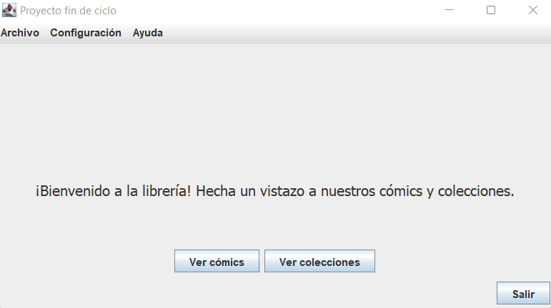

Pantalla principal

Esta pantalla se compone de tres secciones principales:
- Barra de menú: en esta barra se encuentran diferentes tipos de utilidades:
- Archivo: actualmente presenta la opción de salir de la aplicación.
- Configuración: diversas opciones de configuración. Actualemte permite cambiar el idioma de la aplicación.
- Ayuda: muestra la ayuda de la aplicación.
- Zona central: en esta zona están presentes un mensaje de bienvenida así como dos botones con las acciones principales de programa.
- Ver cómics: abre una nueva pantalla para ver los cómics del catálogo.
- Ver colecciones: abre una nueva pantalla para ver las colecciones de cómics.
- Panel inferior: contiene un botón que permite salir de la aplicación.